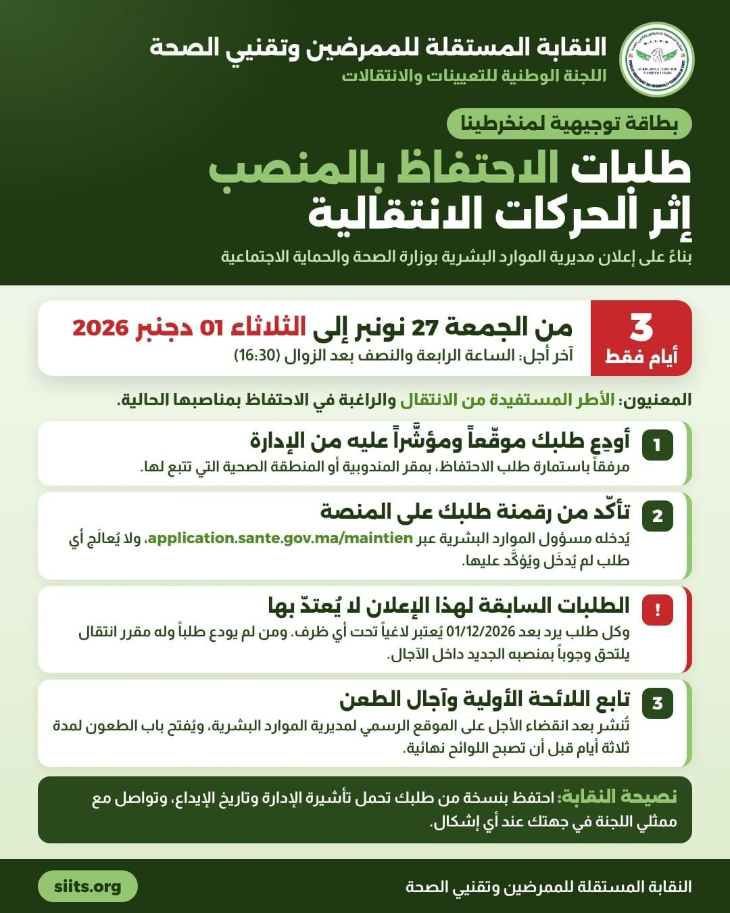

الحركة الانتقالية: إحصاء طلبات الاحتفاظ بالمنصب من 27 نونبر إلى 1 دجنبر 2026

أعلنت مديرية الموارد البشرية بوزارة الصحة والحماية الاجتماعية عن فتح باب إحصاء طلبات الاحتفاظ بالمنصب إثر الحركات الانتقالية التي نظمتها المديرية، لفائدة الأطر المستفيدة من الانتقال والراغبة في الاحتفاظ بمناصبها الحالية.
• الأجل: ثلاثة (3) أيام، ابتداءً من يوم الجمعة 27 نونبر 2026 إلى غاية يوم الثلاثاء 1 دجنبر 2026 على الساعة الرابعة والنصف بعد الزوال.
• مكان الإيداع: تودع الطلبات موقعة ومؤشراً عليها من طرف الإدارة بمقر المندوبيات أو المناطق الصحية التابع لها المعنيون.
• التسجيل عبر المنصة الرقمية: يتولى مسؤولو الموارد البشرية رقن الطلبات معلوماتياً عبر المنصة: https://application.sante.gov.ma/maintien ولن تتم معالجة أو دراسة أي طلب ما لم يتم إدخاله وتأكيده مسبقاً عبر هذه المنصة، مرفقاً باستمارة طلب الاحتفاظ، ولا يعتد بأي طلب قُدّم قبل تاريخ هذا الإعلان.
• احترام الآجال: كل طلب يرد بعد 1 دجنبر 2026 يُعتبر لاغياً ولن يؤخذ بعين الاعتبار تحت أي ظرف.
• الالتحاق بالمنصب الجديد: كل موظف لم يودع طلب الاحتفاظ بالمنصب ويتوفر على مقرر الانتقال، يتعين عليه وجوباً الالتحاق بمنصب التعيين الجديد داخل الآجال المقررة.
• اللوائح: فور انقضاء الأجل، ستُنشر لائحة الطلبات الأولية عبر الموقع الرسمي لمديرية الموارد البشرية، ويُفتح باب الطعون مدة ثلاثة أيام، تصبح بعدها اللوائح نهائية.
وفي هذا الإطار، أصدرت اللجنة الوطنية للتعيينات والانتقالات بالنقابة المستقلة للممرضين وتقنيي الصحة بطاقة توجيهية لفائدة المنخرطين تلخص هذه الخطوات، وتهيب بكافة الزميلات والزملاء المعنيين التقيد بالمسطرة واحترام آجالها، والتأكد من رقن طلباتهم على المنصة قبل انصرام الأجل.
نصيحة النقابة: احتفظ بنسخة من طلبك تحمل تأشيرة الإدارة وتاريخ الإيداع، وتواصل مع ممثلي اللجنة في جهتك عند أي إشكال.
فتح في تطبيق النقابة